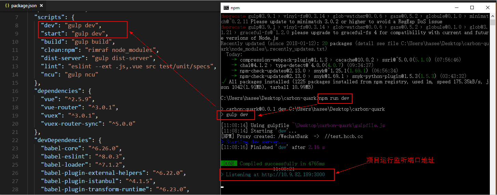
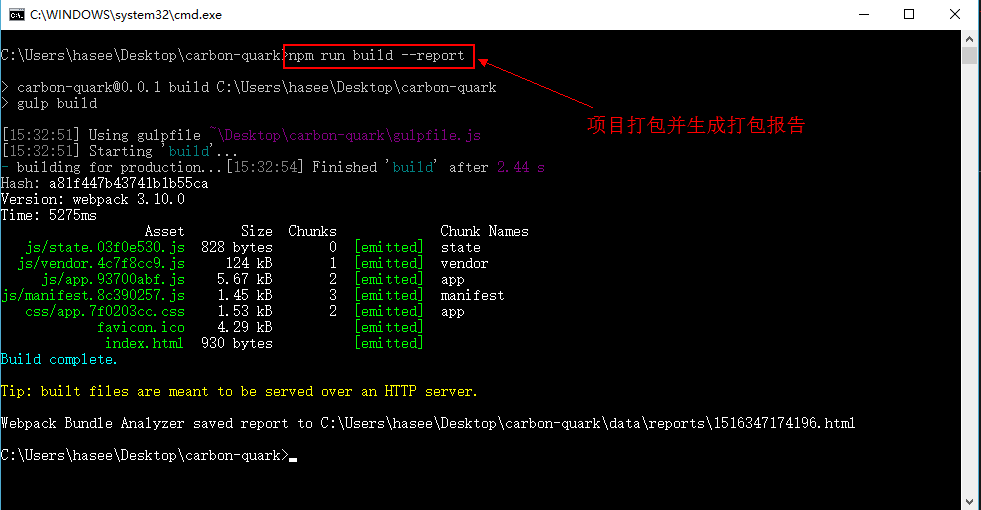
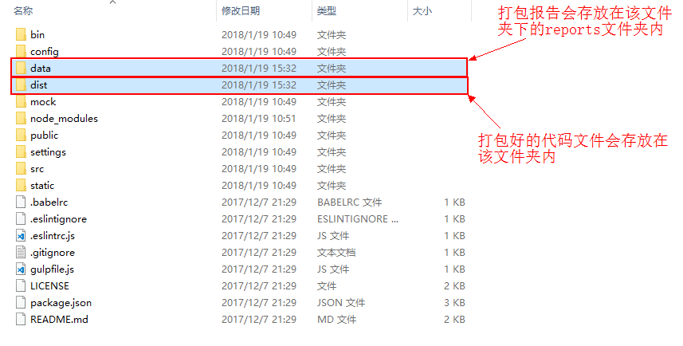
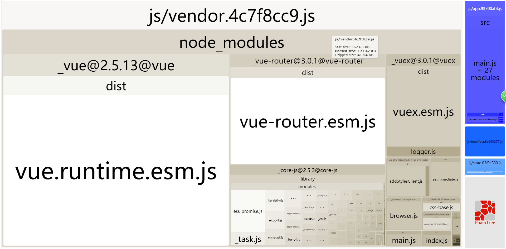

3.NPM基本开发命令行操作
npm run dev
npm run dev 是用于运行本项目的命令行，可以用热加载的方式运行我们的应用，进入到项目目录文件夹后，运行命令行工具，在命令行窗口中输入 npm run dev 回车即可 。

项目运行成功后，浏览器会自动打开监听的端口地址，并加载相应的页面资源（如果浏览器没有自动打开，可以根据终端的显示结果在浏览器地址栏中手动输入端口地址进行访问）。接下来我们就可在开发环境中进行基础的开发工作了，而且得益于webpack的模块热替换机制，我们在修改完代码后不用手动刷新浏览器就能实时看到修改后的效果，这在很大程度上提高了我们的开发效率。
提醒：
- 在保证依赖包安装完整的情况下，项目运行报错的话，很有可能是端口占用导致，请检查本地是否占用此端口，若有，请在任务管理器中结束该进程后，重新运行本项目。
这里简单介绍下 npm run dev 命令行，npm run XXX 是执行配置在package.json文件中的脚本，如本项目的：
"scripts": {
"dev": "gulp dev",
"start": "gulp dev",
"build": "gulp build",
"clean:npm": "rimraf node_modules",
"dist-server": "gulp dist-server",
"lint": "eslint --ext .js,.vue src test/unit/specs",
"ncu": "gulp ncu"
},
所有的命令行操作只有在package.json文件的 scripts 区域中定义过才可以运行，本项目中的 npm run dev 其实是运行了一个 gulp 命令 gulp dev 。
本项目中的所有 gulp 命令都已在项目目录中的gulpfile.js文件里定义过。如 gulp dev 对应的gulpfile.js中的代码片段，如下：
gulp.task('dev', () => {
require('./bin/dev-server')
})
npm run build
开发工作完成后，接下来就可以将测试通过的工程代码进行编译、打包和发布了。
npm run build 就是本项目打包的命令行，通过它可以将我们项目的代码文件打包成可以上线的版本。在项目目录中，运行命令 npm run build ，可以将整个项目根据我们配置好的打包机制进行打包。如果想同时生成打包报告的话，可以在命令行中添加--report关键参数，如下图所示：

打包完成后在项目目录文件夹下会多出一个 dist 文件夹。里面存放着打包生成的所有静态资源文件，以供上线使用。
如若有生成打包报告，项目目录中还会多出一个 data 文件夹。生成的报告会存放在该文件夹下的 reports 子文件夹内。

生成的打包报告可以清楚地看到项目中所有资源所占的比重，如下图所示：

开发人员可以根据报告内容进行后期的包体积优化。
提醒：
- 每次运行打包命令
npm run build都会清空项目目录中的 dist 文件夹，如若需要保留此前打包好的静态资源文件请记得及时备份。